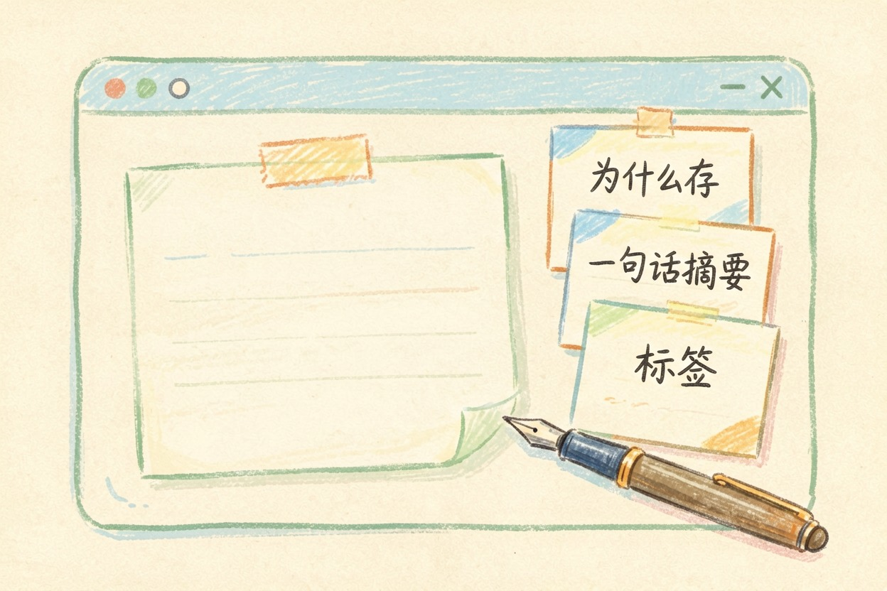
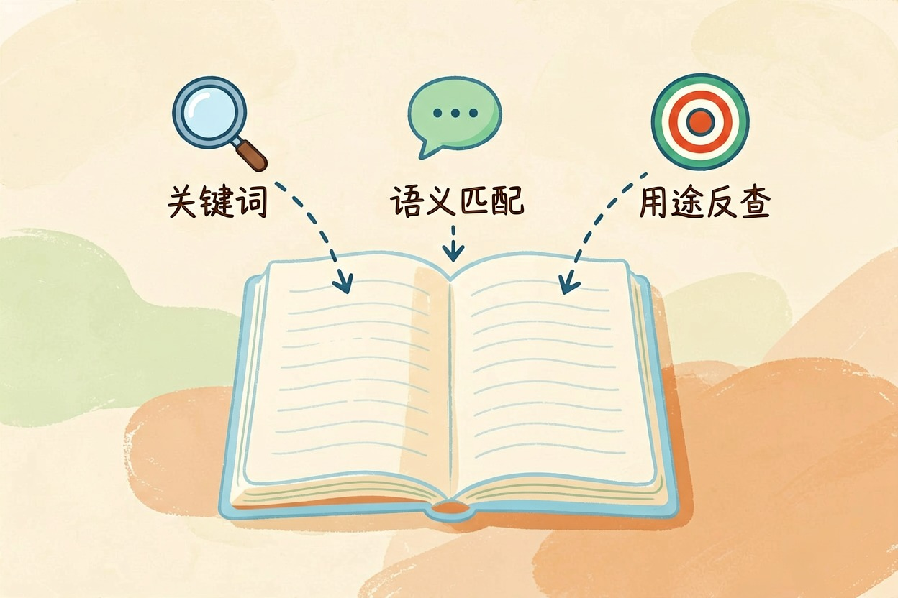

用 AI 整理网页收藏？剪藏与再检索的做法 — Learntide
收藏夹里躺着上千条链接，真正被再次点开的可能不到十条，剩下的都在替你保管焦虑。
ai整理网页收藏：先弄清收藏夹为什么会烂

ai整理网页收藏之前，得先承认一件事：收藏夹变成坟场，是设计使然，不是你懒。
存的动作只要一次点击，成本接近于零。找的动作却要你回忆当时看了什么、大概什么时候看的、用了什么词。两边成本严重不对等，坟场是必然结果。
所以解法只有一条：把一部分成本从「找」挪到「存」。存的时候多付二十秒，后面才有得赚。收藏夹怎么整理这个问题，答案不在分类法里，在入口那一步。
剪藏时补三行元信息
剪藏工具装了不少人都有，问题是大家只存正文。正文机器能读，可它读不出你当时的意图。
进门补三行就够：
一是「为什么存」，写你打算拿它干什么，比如写季度复盘要引。二是一句话摘要，二十五字以内，用自己的话写。三是标签，最多三个，从你固定的标签表里选。
这三行里最关键的是第一行。半年后你搜「季度复盘」，它就出来了，而原文里根本没有这四个字。网页剪藏工具推荐哪一款其实次要，能不能顺手补上这三行才要紧。
有人担心每条都写太累。其实只有真打算用的才需要补全，纯粹好奇点进去的，标个待读就行。一天认真存三条，比一天囤三十条有用得多。
让模型批量补摘要和标签

存量太多补不动，就交给模型。浏览器书签能导出 HTML 或 JSON，剪藏工具一般也支持导出清单，整批喂过去跑一遍。
你是我的收藏整理助手。下面是我的书签导出清单，逐条处理。
固定标签表（只能从中选，不许新造）：
工作 学习 工具 行业 灵感 教程 待读 归档
每条输出一行，用竖线分隔：
原标题 | 一句话摘要（不超过 25 字，写它解决什么问题）| 标签（最多 3 个）| 建议动作
建议动作只能填三种之一：保留 / 待读 / 删除
判断依据：
1 内容已过时或链接类型为营销页 → 删除
2 三个月内用得上 → 保留
3 其余 → 待读
标题信息不足以判断的，摘要写「信息不足」，动作填待读。
【粘贴导出的书签清单】跑完先看「删除」那批。大胆删，一千条里砍掉四成很正常，留下的才是你真会用的。
要让模型读全文再总结，得把网页正文抓下来一起喂，这块可以参考把文档喂给 AI 那篇的做法。
再检索的三条路径
第一条是关键词搜索，前提是你记得原文用词，命中率其实不高。
第二条是语义搜索。你描述场景，工具按意思匹配。「上次那篇讲小团队怎么排期的」这种模糊线索也能捞出来。
第三条是按用途反查，靠的正是你补的「为什么存」那一行。收藏的文章怎么找回来，这条最稳。
三条路径最好都保留，各有各的场合。关键词适合找确定的标题，语义搜索适合找模糊印象，用途反查适合赶稿时救急。
把收藏并进统一的知识库里，检索面会大很多，具体流程在搭建个人知识库那篇里讲过。
清理节奏与几个提醒
每月留十分钟过一遍待读。两个月没动的，要么读掉，要么归档，别让它们一直挂着。
别装三个剪藏工具。入口越多，资料越散，最后哪个都不敢信。也别把收藏当成学习，存下来不等于读过，真要吸收还得写笔记，方法可以看 AI 读书笔记那篇。工具从工具导航里挑一款用顺手就好。ai整理网页收藏这件事，赢在存的那二十秒，不在事后的大扫除。
本文信息核对于 2026-08-08。AI 产品的价格、免费额度与功能变动频繁，实际以各工具官网当前说明为准。